Bachelor Arbeit - Informatik
Automatische Individualisierung eines Avatars mit Hilfe von optischem Tracking
Benjamin Vollmer
Warum individualisierte Avatare?
Virtual Reality im Trend!
Avatare verbessern Interaktion (Integration)
Immersiveres Erleben
Einfach und ohne großen Aufwand!
Gliederung
Theorie und Technologie
Herausforderung und Implementierung
Live Demo
Fazit
Theorie und Technologie
Unity3d
Kinect und ZigFu
Unity3D
Game-Engine
Multi-Plattform
Einfache Steuerung von 3D Elementen
Einfache Anbindung externer Hardware
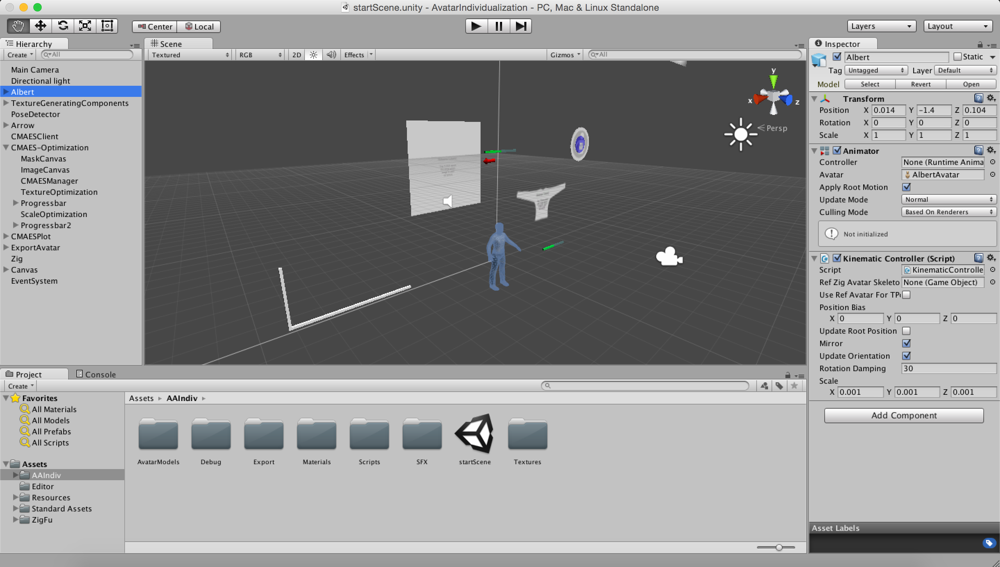
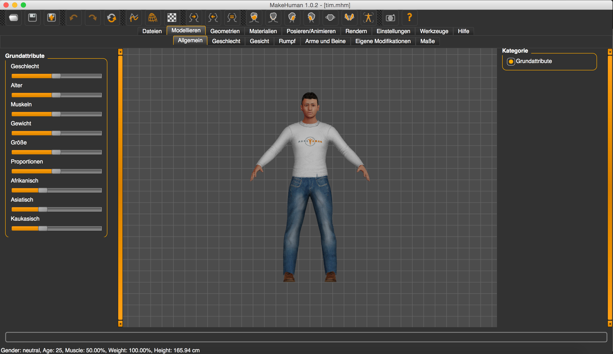
Theorie und Technologie
Unity3d
Kinect und ZigFu
Kinect und ZigFu
Optische Erfassung des Nutzers
Trackingdaten
Anbindung nach Unity
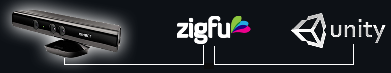
Kinect
RGB-Farbstrom
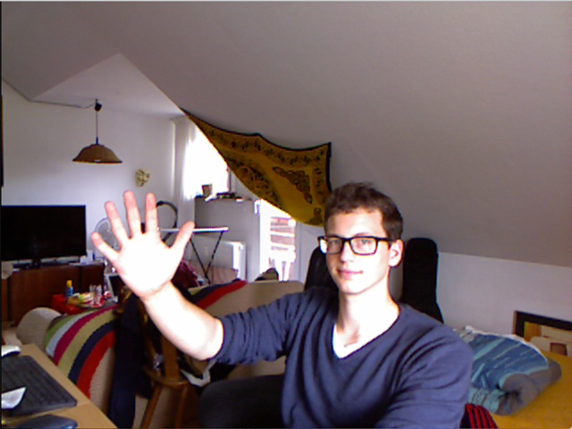
IR-Tiefenstrom
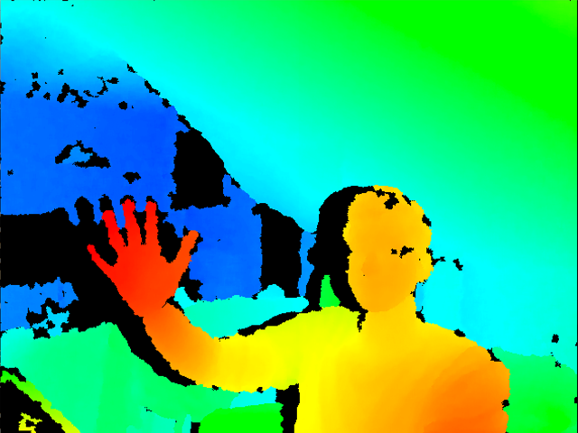
Skelett-Datenstrom
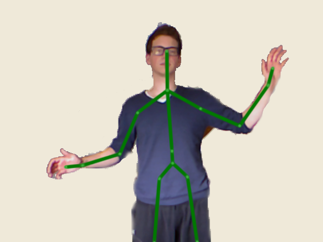
Theorie und Technologie
Gundlage geschaffen für:
Verarbeitung 3D Objekte (Unity3D)
Erstellen und Riggen von Avataren (MakeHuman)
Tracking des Nutzers (Kinect und ZigFu)
Herausforderung und Implementierung
Für Individualisierung benötigt:
Bewegung des Nutzers imitieren
Individualisierte Textur
Individualisierte Proportionen
Bewegung des Nutzers imitieren
Kinect Skelett-Datenstrom liefert Gelenkorientierungen
Problem: Skelette stimmen nicht überein!
Unterschiedliche Ausgangsposition
Unterschiedliche Gelenkausrichtungen
Bewegung des Nutzers imitieren
Skelett-Fehlkombination
Your browser does not support the video tag.
Bewegung des Nutzers imitieren
Lösung:
Avatar initial in T-Pose
Negieren der Y- und Z-Achse
Bewegung des Nutzers imitieren
Skelettübereinstimmung
Your browser does not support the video tag.
Herausforderung und Implementierung
Für Individualisierung benötigt:
Bewegung des Nutzers imitieren
Individualisierte Textur
Individualisierte Proportionen
Individualisierte Textur
Der Avatar soll dem Nutzer ähnlich sehen.
Er soll am Oberkörper das gleiche Kleidungsstück tragen:
Mit der Kinect eine Aufnahme des Nutzers machen
Ausschnitt dieser Aufnahme wählen
Diesen auf dem Oberkörper des Avatars anzeigen
Individualisierte Textur
Vorbereitung
Anpassen den UV-Mappings
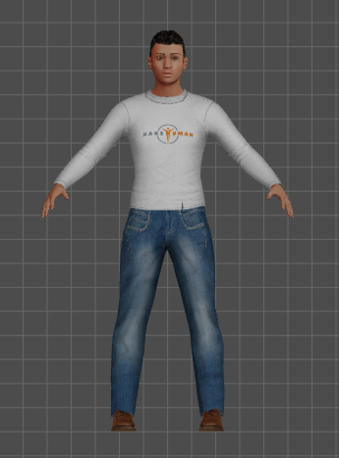 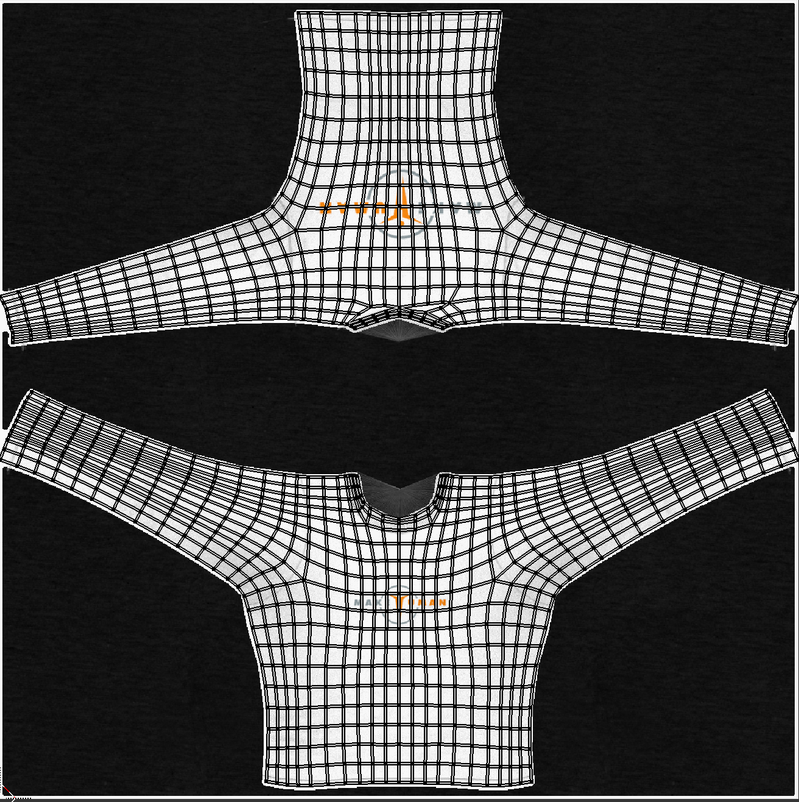
Original UV-Unwrap des MakeHuman Avatar
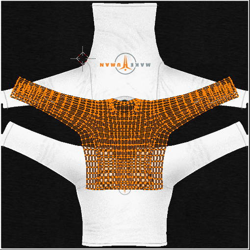
Vereinfachter UV-Unwrap des MakeHuman Avatar
Individualisierte Textur
Aufnahme mit der Kinect
Über RGB-Farbstrom Bild aufnehmen
Über Tiefeninformation Hintergrund entfernen
Als neue Textur für den Oberkörper-Mesh speichern
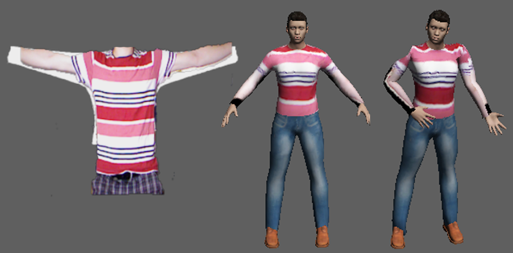
Individualisierte Textur
Problem: Schwarze Ränder sichtbar
Die Maske schneidet den Hintergrund mit aus
Abhängig von der Position des Nutzers
Lösung: Position des Nutzers durch Verschieben und Skalieren optimieren
Verwende dazu CMAES
Individualisierte Textur
Ablauf
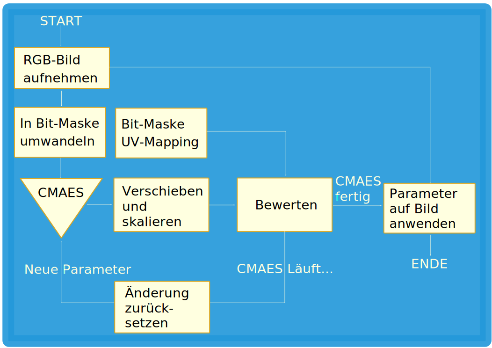
Individualisierte Textur
Ergebnis CMAES
Kaum noch sichtbare schwarze Ränder
Textur wird fertig auf dem Avatar angezeigt
Individuelle Texturierung abgeschlossen
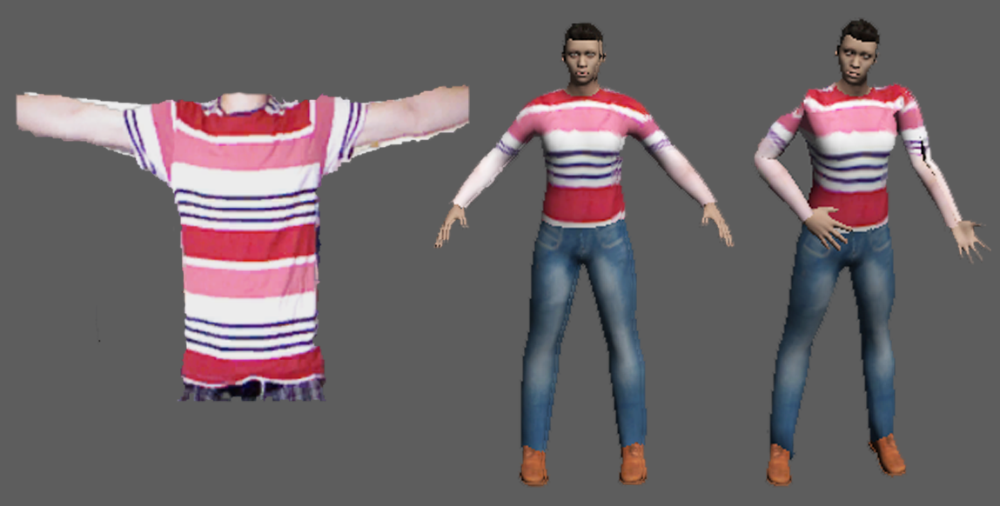
Herausforderung und Implementierung
Für Individualisierung benötigt:
Bewegung des Nutzers imitieren
Individualisierte Textur
Individualisierte Proportionen
Individualisierte Proportionen
Der Avatar soll an Armen und Beinen das gleiche Längenverhältnis haben:
Mit der Kinect das Skelett des Nutzers erfassen
Die Verhältnisse von Armen und Beinen berechnen
Den Avatar Skalieren bis er die gleichen Verhältnisse hat
Richtige Skalierung finden: Optimierungsproblem
Individualisierte Proportionen
Ablauf
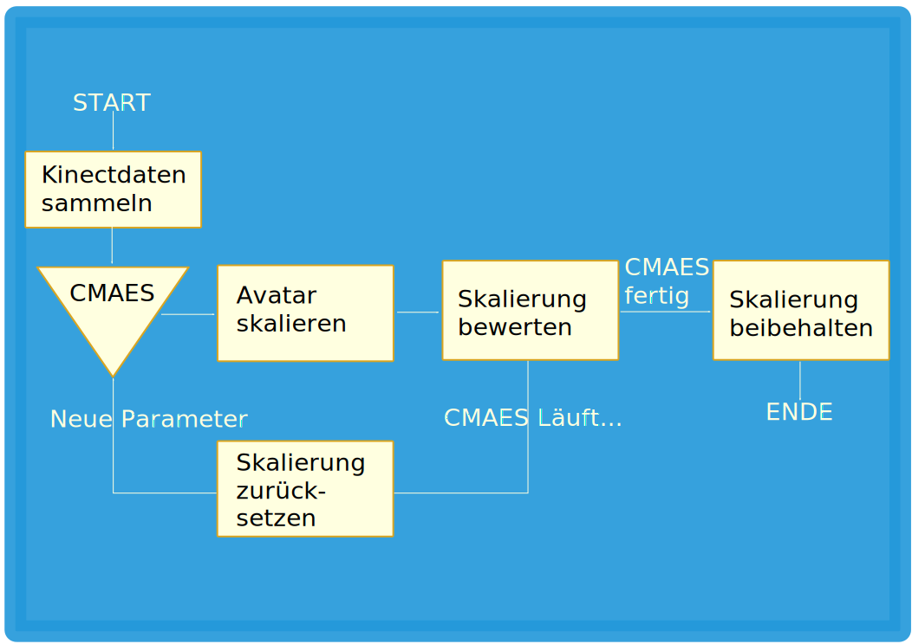
Individualisierte Proportionen
Umsetzung
Mit der Kinect werden Skelettdaten über 100 Updates gesammelt
Die Skalierungsfaktoren des Avatars werden mit dem CMAES ermittelt
Mit diesen Faktoren wird der Avatar an Armen und Beinen Skaliert
Individualisierte Proportionen
Ergebnis CMAES
Verhältnisse im Vergleich sehr ähnlich
Individuelle Proportionen erstellt
Ausgangssituation
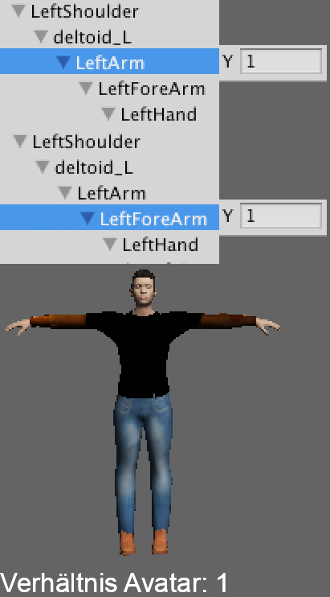
Ergebnis der Skalierung
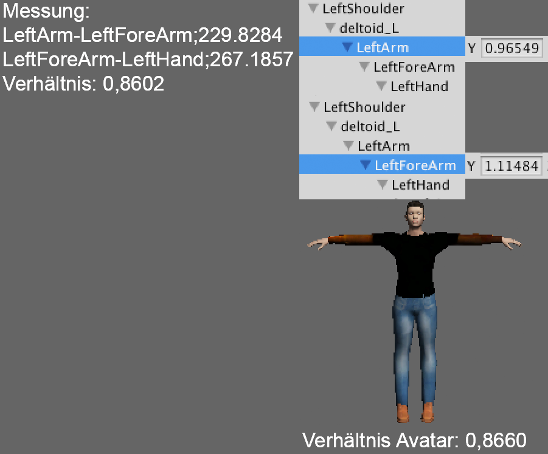
Herausforderung und Implementierung
Umgesetzte Funktionen:
Kinematik des Avatars
Individualisierte Textur Oberkörper-Mesh
Individualisierte Proportionen Arme und Beine
Live Demo
Fazit
Probleme:
Kinect erfasst keine Details
Skalierung lässt nur geringe Proportionen-Anpassung zu
Nur Textur für Vorderseite
UV-Mapping nur von Hand einstellbar
Fazit
Was gut funktioniert:
Einfach und schnell
Avatar kann animiert werden
Lässt sich beliebig erweitern
Ausblick
Leichter Export ermöglicht Import in andere Unity Projekte
Höhere Sensorauflösung für Anpassung Hände und Gesicht
Statt Skalierung 3D-Scan und automatisches Rigging?
Vielen Dank für's Zuhören.
Bild-Quellen
Hintergrundbild am 16.8.2015 entnommen aus
Your Shape Fitness Evolved 2012 Features Trailer
Unity Logo 1 Zugriff am 21.8.2015:
www.programmybesplatno.com
Unitylogo 2 Zugriff am 21.8.2015:
www.ingame.de
Kinect-Sensor Zugriff am 21.8.2015:
https://i-msdn.sec.s-msft.com
ZigFu Logo Zugriff am 21.8.2015:
www.zigfu.com
{kind=link}
{kind=link}
{kind=link}
{kind=link}